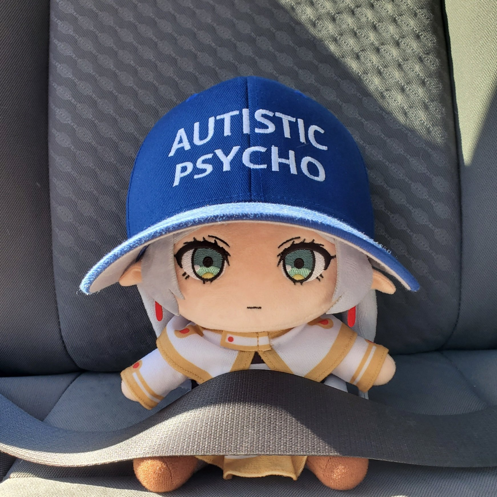
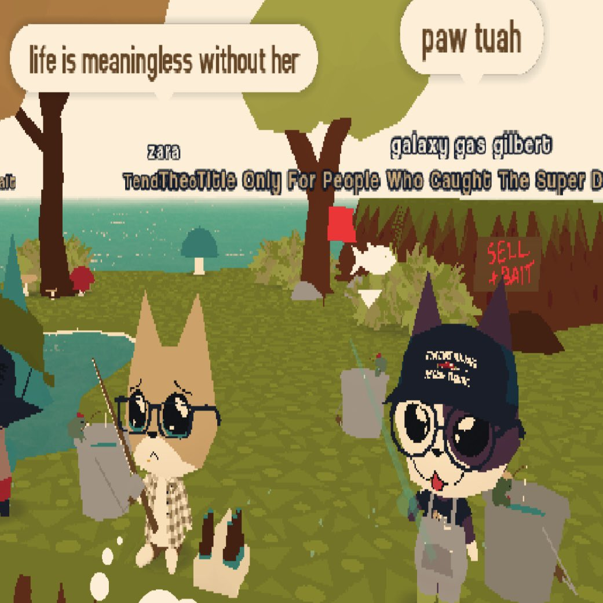

memes
so much wowwers
Some silly and stupid images I found on the internet.
This is a cry for help for what connects us in a personal level which is getting less by less each day. The cycle must be stopped and you should wake up. Be yourself to save a person. Leave the society. Love your homies and pookies.
Mental health is no joke and you're not defined by mere numbers. In the end, you're you, and so are they.
We're utterly flawed humans.
"> Succumbing to a brief comfort and warmth is nothing of a weakness but that acceptance of strength. Without rest we only make fools of ourselves in face of challenges for not giving it all.
Succumbing to a brief comfort and warmth is nothing of a weakness but that acceptance of strength. Without rest we only make fools of ourselves in face of challenges for not giving it all.There are just times where we can't just continue anything at all, that our bodies and minds are not in it, even souls can be crushed, and so only with enough time and reflection we can get back up again in full strength.
There's no shame in letting go and being vulnerable in a moment to take a break from everything. We're not machines.
We're utterly fragile humans.
"> There will be times that it's not just salvageable at all. There's only much one can do as a human, and we hit our limits from time to time. Things just don't work at certain circumstances.We are slaves of no one, not even death. Not with our past, not with our mistakes, and not even with ourselves.
Learn to forgive and love yourself. Take each step slowly, and face tomorrow with a bit of hope. Life is just starting, and you can throw that spider to despair.
"> A joke about how one cannot discern what runs to everyone's minds. This elf can be a murder machine or a comfort creature."> 